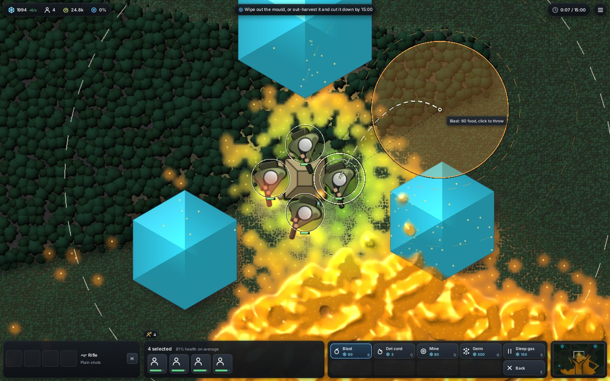
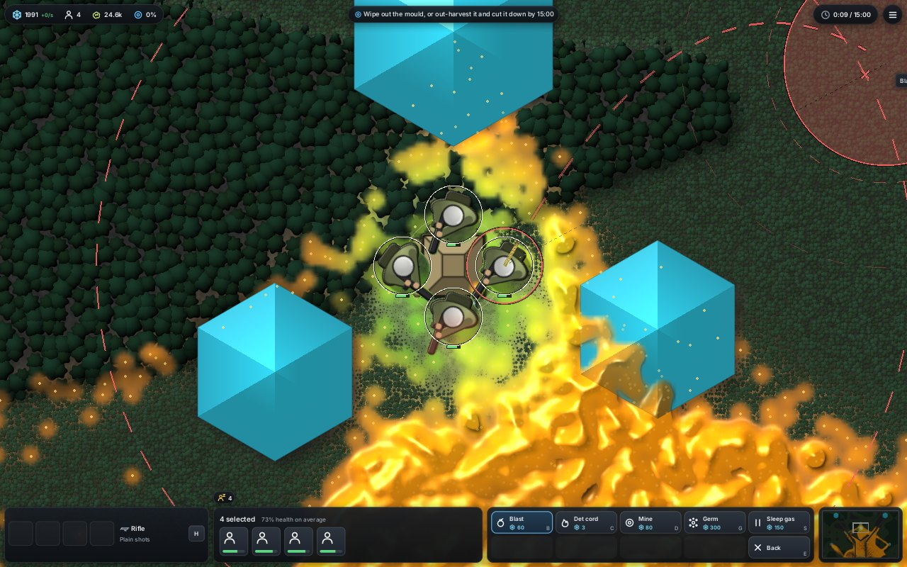

<title>Aiming a Throw</title>
<meta name="claude:viewport-fit-sides" content="cover">
<style>
/* Layout: one reading column, two clips first with what each shows under them, then the rules. */
:root {
  --bg: #f3f4f1; --fg: #1d211c; --muted: #5c6658; --line: #d4d9cf; --accent: #b4561c; --bad: #b23a2c;
  --display: "Space Grotesk", system-ui, sans-serif; --body: "Inter", system-ui, sans-serif;
}
@media (prefers-color-scheme: dark) { :root:not([data-theme="light"]) { --bg: #151816; --fg: #e4e8e0; --muted: #9aa396; --line: #2e3530; --accent: #f0a060; --bad: #ec7d6c; color-scheme: dark } }
:root[data-theme="dark"] { --bg: #151816; --fg: #e4e8e0; --muted: #9aa396; --line: #2e3530; --accent: #f0a060; --bad: #ec7d6c; color-scheme: dark }
body { background: var(--bg); color: var(--fg); font-family: var(--body); line-height: 1.55; padding-block: 28px 48px; padding-left: max(16px, env(safe-area-inset-left, 0px)); padding-right: max(16px, env(safe-area-inset-right, 0px)); }
main { max-width: 1140px; margin: 0 auto; display: grid; gap: 24px; }
h1, h2 { font-family: var(--display); text-wrap: balance; margin: 0; }
h1 { font-size: 1.9rem; } h2 { font-size: 1.15rem; }
p, li { max-width: 70ch; margin: 0; }
.lede { color: var(--muted); }
video, img { width: 100%; max-width: 100%; border-radius: 6px; display: block; background: #000; }
figure { margin: 0; display: grid; gap: 8px; } figcaption { color: var(--muted); font-size: .92rem; max-width: 80ch; }
.pair { display: grid; grid-template-columns: repeat(auto-fit, minmax(300px, 1fr)); gap: 14px; }
ul { margin: 0; padding-left: 1.2em; display: grid; gap: 6px; }
section { display: grid; gap: 10px; }
.k { color: var(--accent); font-weight: 600; } .bad { color: var(--bad); font-weight: 600; }
code { font-size: .88em; }
</style>
<link rel="stylesheet" href="https://fonts.googleapis.com/css2?family=Inter:wght@400;600&family=Space+Grotesk:wght@600&display=swap">
<main>
  <header style="display:grid;gap:8px">
    <h1>Aiming a throw</h1>
    <p class="lede">You asked for a better aiming and range visual when throwing an explosive. Before this, aiming a tool showed only a green disc at the cursor. A click out of range was taken, and then an alert said "Too far". These clips are the Fork, seed 1, at 6 to 9 s, with the camera held at zoom 12 on the squad. The cursor sweeps out and back.</p>
  </header>
  <figure>
    <video src="blast.mp4" controls autoplay muted loop playsinline></video>
    <figcaption><span class="k">Blast.</span> A ring marks the soldier who throws (the nearest one holding a tool). The dashed cream ring is its reach, 24 cells. The dashed arc lobs to a small ring where the blast lands. The orange disc is the 6-cell kill area. The faint dashed rings are the 7-cell crater and the 12-cell alarm that wakes the mould. Past the reach, everything turns <span class="bad">red</span>. The arc stops at the reach's edge with a cross where the throw would fall, and the note by the cursor says how many cells out you are. A click there is refused.</figcaption>
  </figure>
  <figure>
    <video src="gas.mp4" controls autoplay muted loop playsinline></video>
    <figcaption><span class="k">Sleep gas.</span> The same ghost in the gas's lavender, 12 cells across the radius. It is thrown from whichever soldier holding a tool is nearest the cursor. The thrower changes as the cursor moves round the squad.</figcaption>
  </figure>
  <div class="pair">
    <figure><figcaption>In reach, 7 s. "Blast: 60 food, click to throw".</figcaption></figure>
    <figure><figcaption>Out of reach, 9 s. Red ring, arc and cross. These clips were filmed before the note chip learned to flip to the cursor's left at the screen edge; it does now.</figcaption></figure>
  </div>
  <section>
    <h2>The rules behind it</h2>
    <ul>
      <li>The thrower and the reach come from the same rule that decides whether the tool goes off (<code>Kit::thrower</code>, <code>KitRules::reach</code>). If the ghost is red, the click would have failed anyway.</li>
      <li>The reach ring and the arc are cream so they read on the gold slime. In the first try they were orange and the arc disappeared into the slime. The area keeps the tool's colour: fire orange for blast and det cord, amber for a mine, green for the germ, lavender for sleep gas.</li>
      <li>Lines are 2 to 3 pixels wide with a dark edge, built from 1-pixel marks, so they stay sharp zoomed in.</li>
      <li>A det cord's arc goes to the cord's middle, where its reach is measured.</li>
      <li>Aiming costs at most about 260 marks, only while a tool is aimed. The GTX 1070 has not been timed.</li>
      <li>The ghost is not tied to the Tools page. The gun-card plan's device slot (step E) can aim with it.</li>
    </ul>
  </section>
</main>
